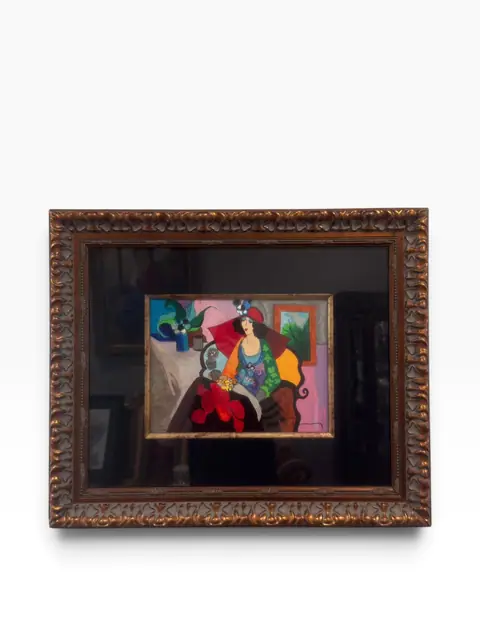
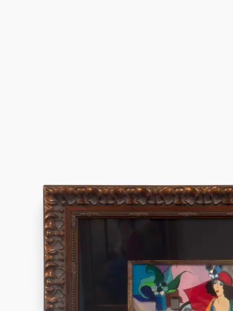
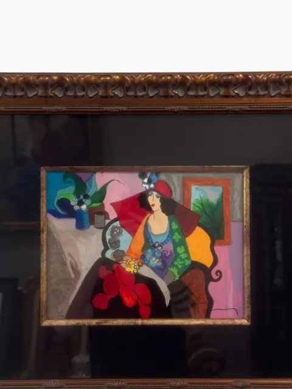
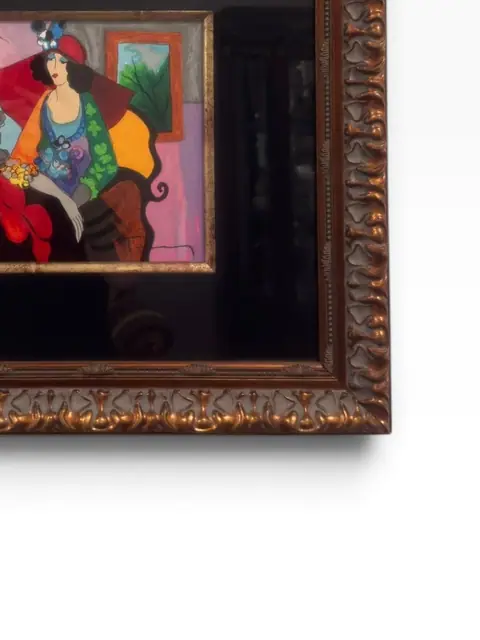
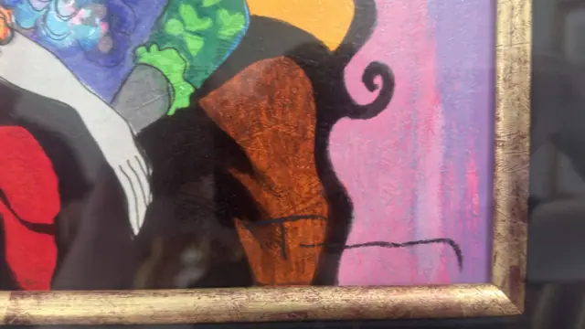
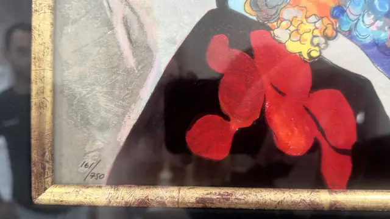
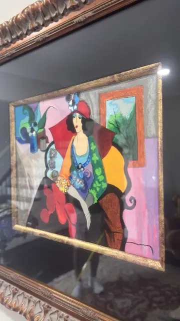
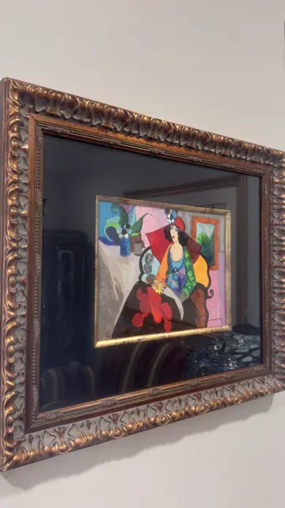
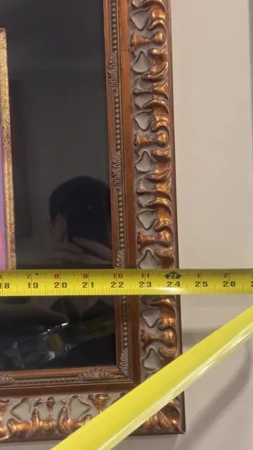
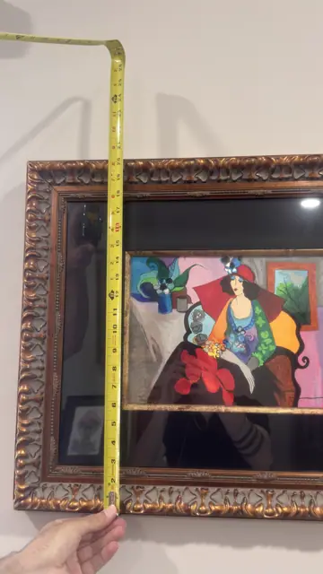

Paintings & Prints
Woman in Red at the Café
Itzhak Tarkay · 20th century
Price Upon Request












About the Item
A glamorous woman in a flowing red dress lounges in a jewel-toned café interior, rendered in Tarkay's unmistakable flat, luminous palette of rose, emerald and gold. Numbered 164/350, this decorative serigraph distils the artist's celebrated world of elegant café society. Set in an ornate copper-toned frame with a deep black mat, it is pure Parisian pleasure. Numbered 164/350 lower left. Vertical pink signature mark at the right side of the image is consistent with Tarkay's characteristic vertical 'Tarkay' signature but is not fully legible; attribution rests on the unmistakable Tarkay café-interior style and the 350-edition format typical of his serigraphs (cf. 'Jaffa Cafe', pencil-signed, edition of 350). Confidence medium pending clearer signature verification. Tape-measure photos are partial (frame height ~25 in / 63.5 cm visible) — full dimensions listed as not legible. Signature detail: Signed right side (vertical mark, partially legible).
Details
- Creator:
- Itzhak Tarkay
- Creation Year:
- 20th century
- Medium:
- Serigraph (numbered 164/350)
- Period:
- 20Th
- Condition:
- Offered in the condition shown in the photographs.
- Reference Number:
- VO-302